Responsive non trasformativo
Le tabelle desktop vengono compresse su mobile invece di cambiare struttura.
→ Vista card e priorità specifiche per viewport.Una review dell'esperienza attuale e undici esplorazioni visuali per rendere Soul PQ più coerente, leggibile e moderno, senza semplificare il lavoro tecnico che deve sostenere.
Usare Quiet precision come linguaggio generale e Focus canvas come struttura dell'editor, integrando il percorso Workflow rail per chi entra nel flusso per la prima volta. È la combinazione con il miglior equilibrio tra continuità, spazio operativo e apprendibilità.
L'applicazione è ricca e già operativa, ma presenta quasi tutto nello stesso momento. Il restyling deve organizzare la complessità, non nasconderla.
Le tabelle desktop vengono compresse su mobile invece di cambiare struttura.
→ Vista card e priorità specifiche per viewport.CTA, strumenti, export e azioni rare hanno spesso lo stesso peso.
→ Una primary action per contesto.Overview, lavoro operativo e controlli esperti convivono sullo stesso piano.
→ Progressive disclosure e density mode.Collapse, toolbar, badge, toggle e feedback non seguono un'anatomia condivisa.
→ Design system minimo prima delle route.Palette, toolbar, tabella e riepilogo competono con il documento.
→ Canvas dominante e inspector unico.Alcuni controlli sono piccoli; focus, selezione e colore non bastano sempre.
→ Target, focus ring e semantica condivisi.Walkthrough a 1440×1000 e 390×844 su dashboard, lista studi, dettaglio, editor e impostazioni. Gli screenshot restano come confronto verificabile durante l'implementazione.
I concept sono ipotesi di lavoro, non mockup da implementare alla lettera. Apri un'immagine per osservarla a piena risoluzione.
Continuità con il modello mentale corrente, gerarchia più forte, KPI e coda operativa prima della tabella.
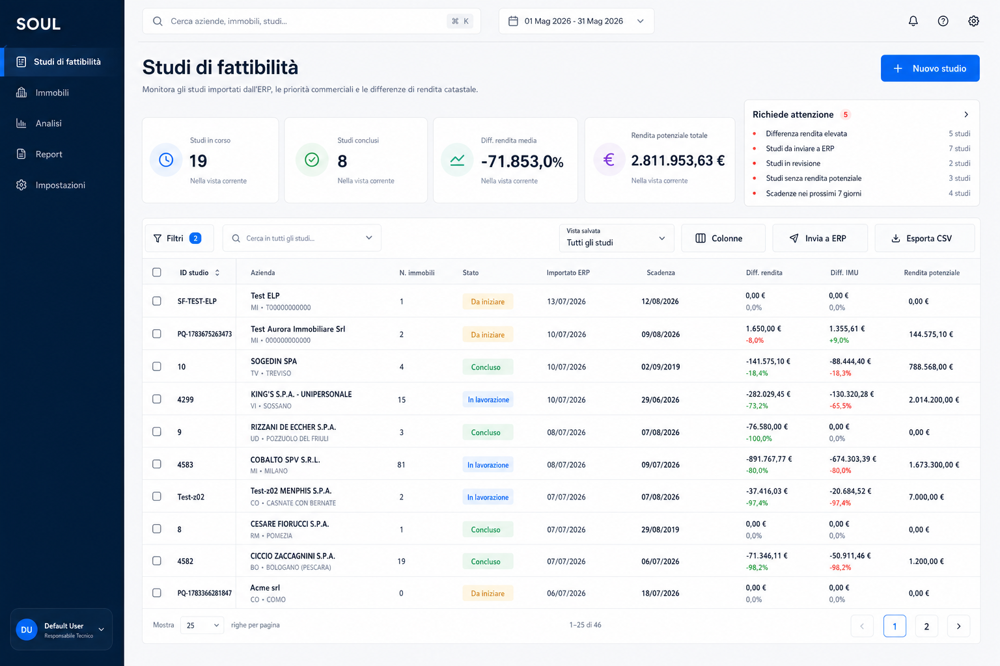
Apri a piena risoluzione ↗Più analitica e densa: mette in primo piano eccezioni, attività e metriche operative per utenti esperti.
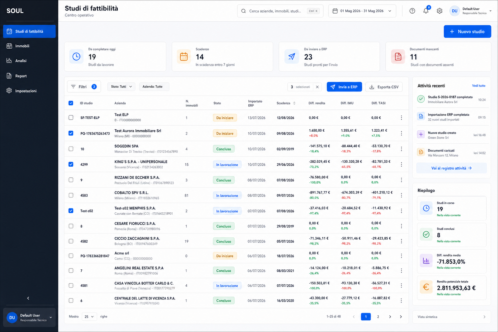
Apri a piena risoluzione ↗Navigazione superiore, viste salvate e quick detail: la più spaziosa e contemporanea, ma anche la più distante dall'attuale.
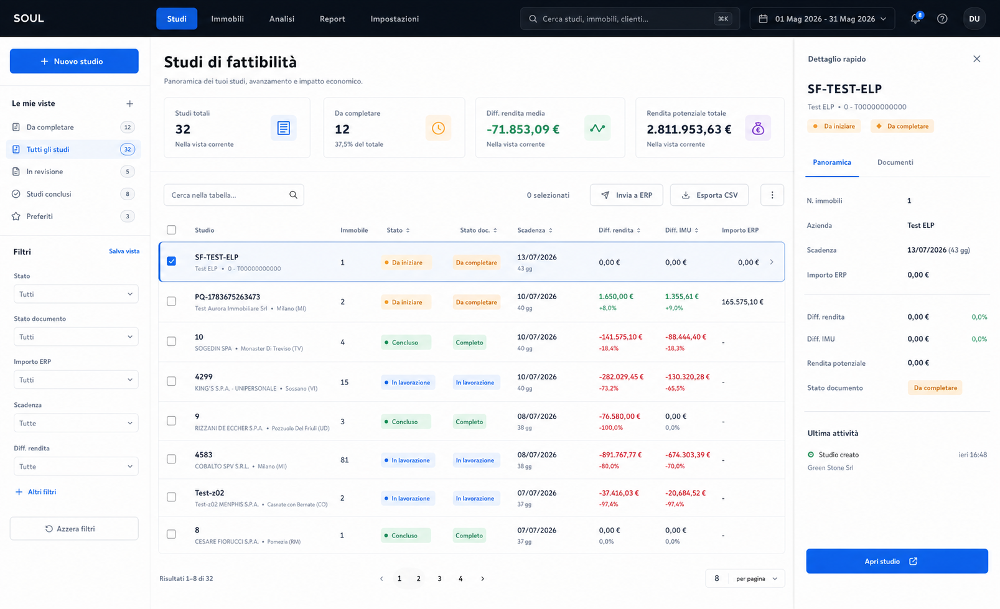
Apri a piena risoluzione ↗Tre versioni della stessa schermata: valore al primo accesso, percorso operativo e aiuto contestuale per una singola azione.
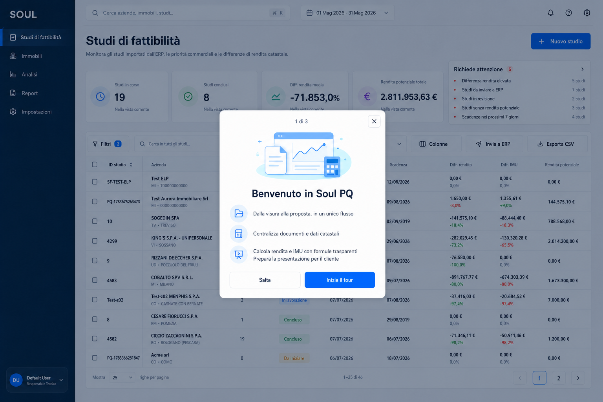
Due o tre benefici, ignorabile e riapribile.
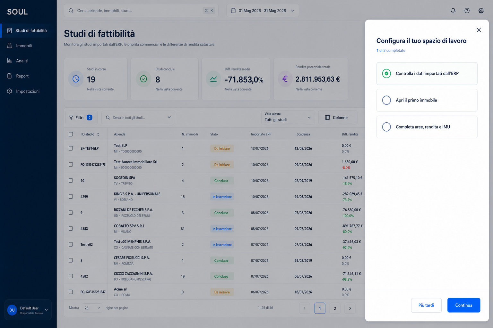
Trasforma il primo utilizzo in tre attività concrete.
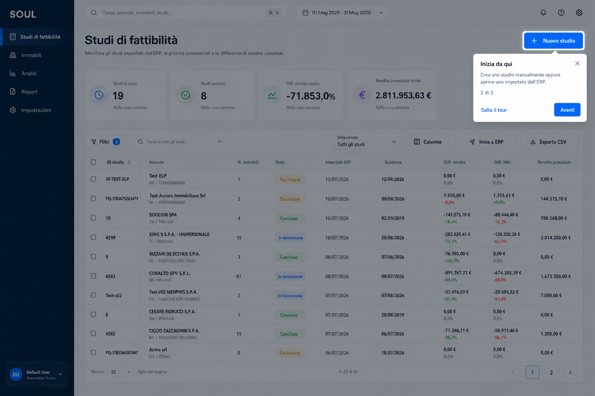
Spiega una sola azione nel punto di necessità.
Ogni proposta conserva documenti, strumenti canvas, aree, lotto, prezzario, nuova rendita e trasparenza dei calcoli IMU.
Canvas dominante, inspector unico e drawer aree adattivo. Il miglior punto di partenza.
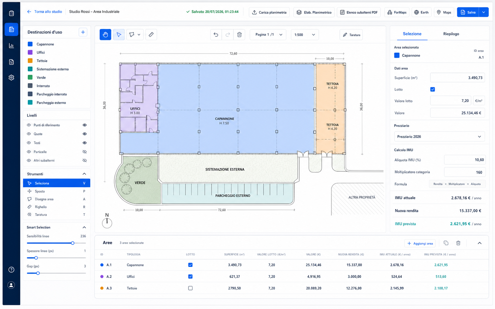
Documento → Scala → Aree → Valori e IMU. Riduce l'incertezza sul prossimo passo.
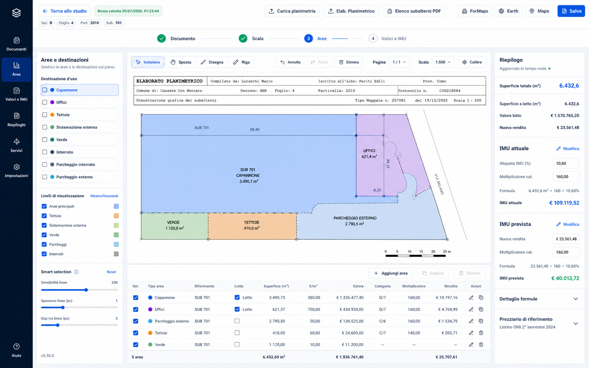
Command palette, shortcut e pannelli compatti per lavorare velocemente.
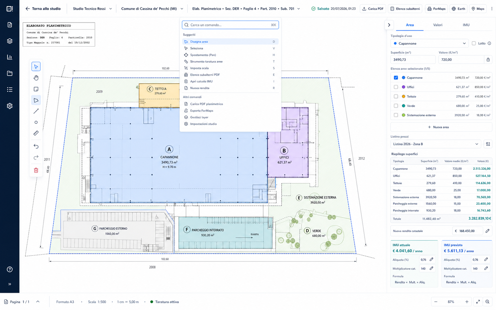
Documento e risultati affiancati per verifiche rapide e trasparenti.
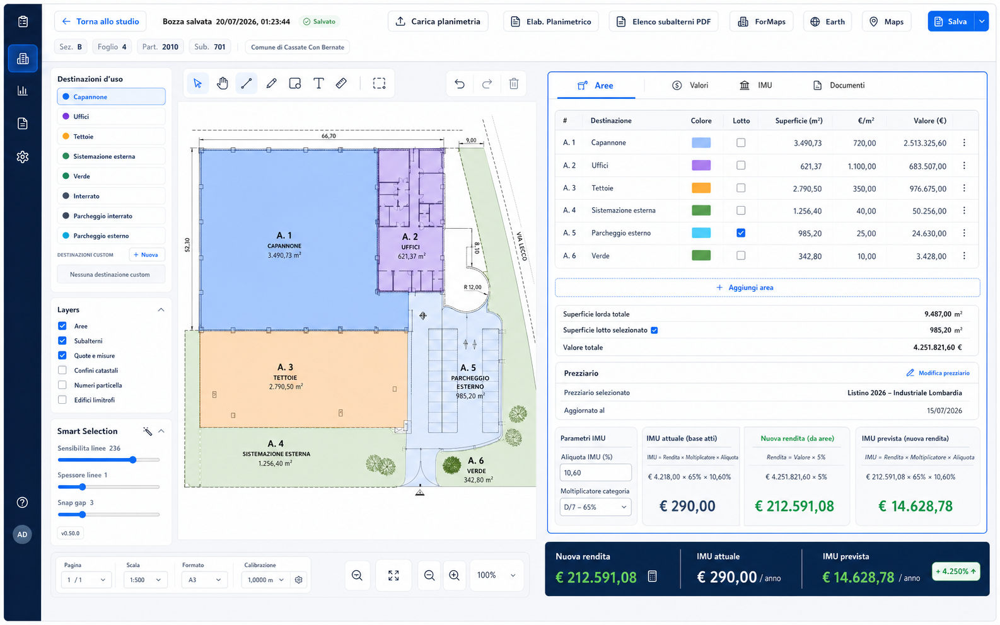
Pannelli richiamabili e planimetria quasi full-screen; ideale come modalità Focus.
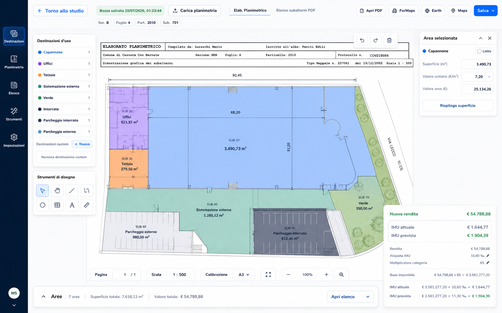
Una migrazione progressiva dietro feature flag protegge la continuità delle funzioni ERP, documenti, editor e calcoli.
Parità funzionale, task critici, token e componenti base.
Dashboard, lista, dettaglio e responsive reale.
Architettura scelta, layout adattivo, modello aree unico.
Onboarding, accessibilità, tastiera e stati.
Test con operatori, telemetria e migrazione controllata.
One task, one visual center. Ogni schermata deve avere un solo centro operativo.
Trust through provenance. Formula, fonte e override restano leggibili quando servono.
Same meaning, same component. Stessa semantica, stessa anatomia, in tutta l'app.
Reversible actions. Modifiche ed eccezioni espongono sempre stato e recupero.